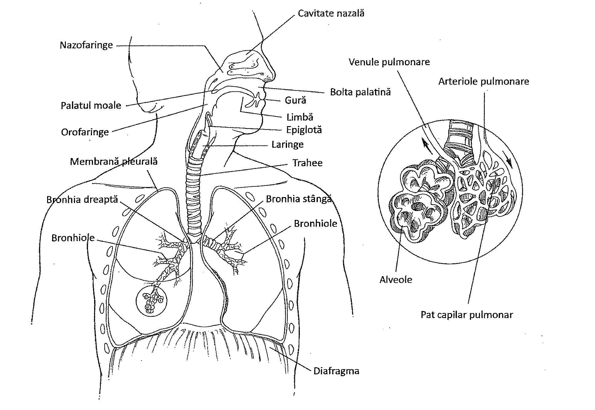
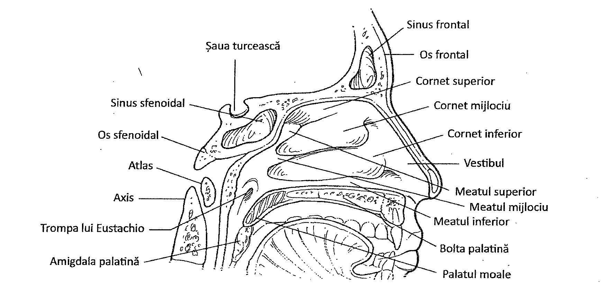
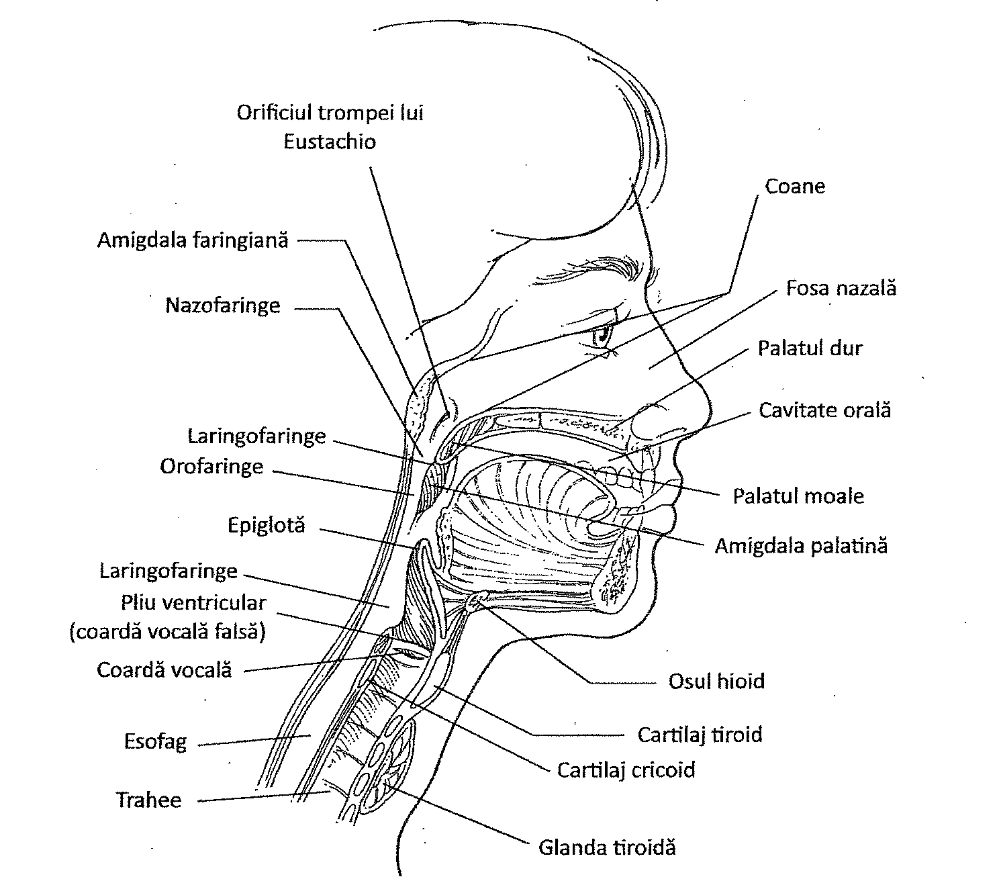
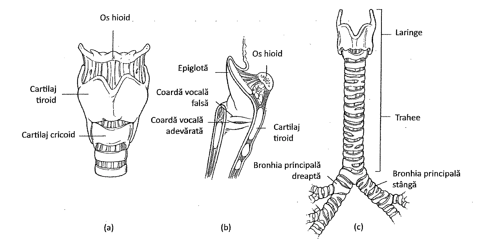
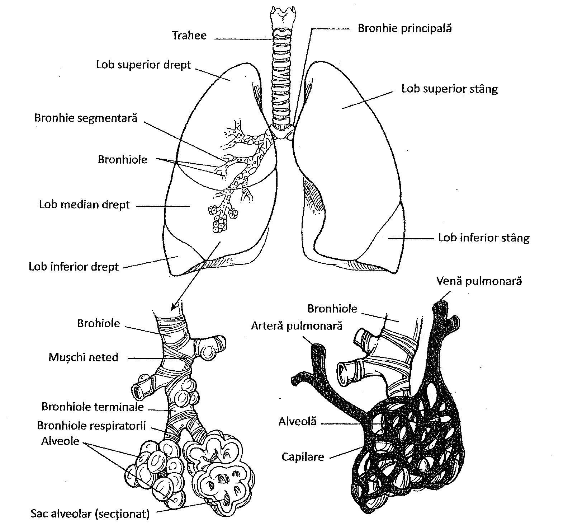
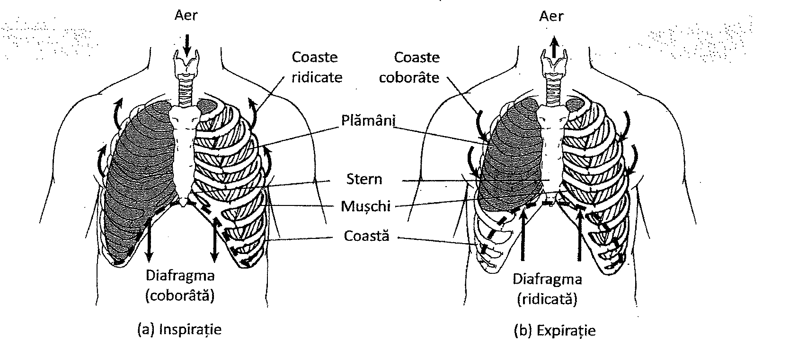
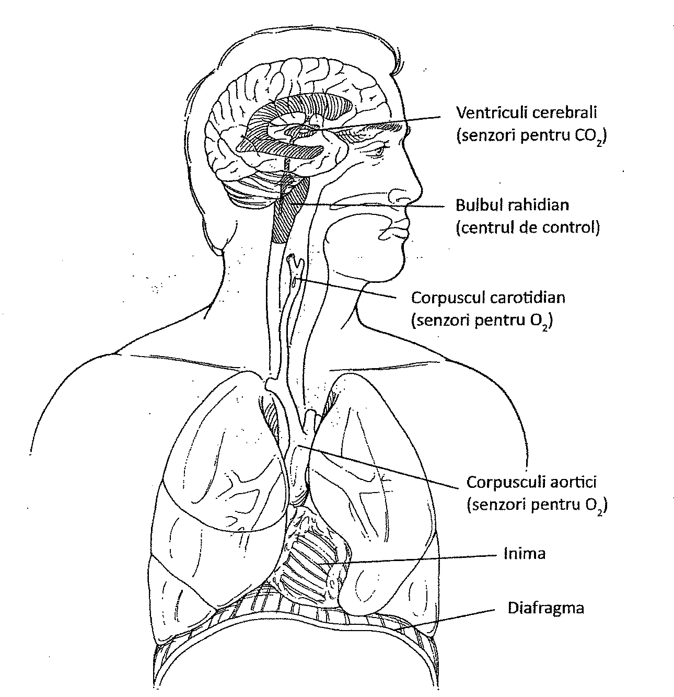
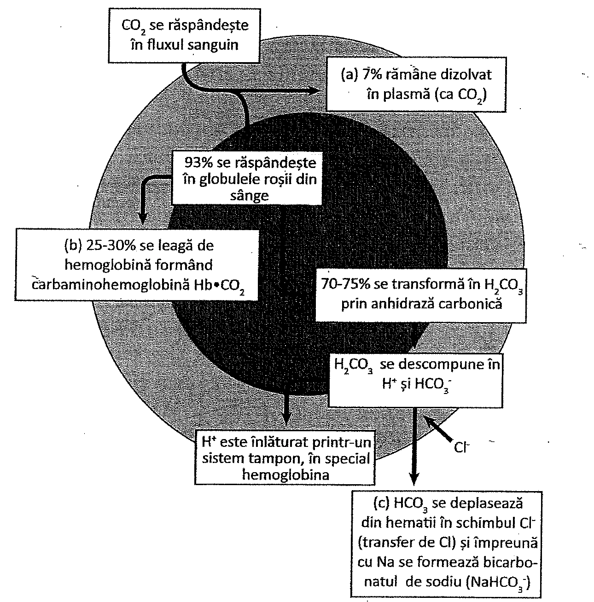
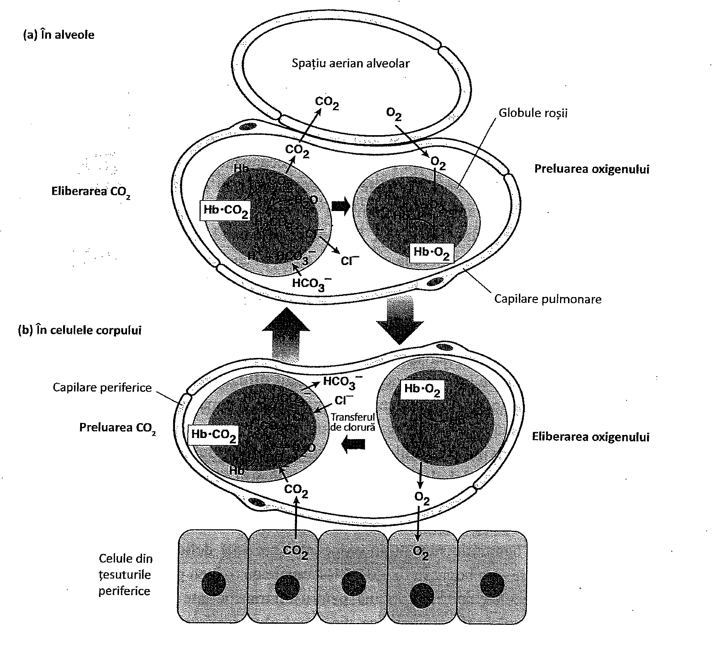

17. Sistemul respirator
Cuprinsul capitolului
- Anatomia sistemului respirator: nas și cavități nazale; faringe; laringe; trahee; bronhii și bronhiole; plămâni
- Respirația: inspirația și expirația
- Volumele respiratorii
- Controlul respirației
- Schimbul de gaze
17. Anatomia sistemului respirator
Sistemul respirator are rol în asigurarea schimbului de oxigen și dioxid de carbon între celulele corpului și mediul extern. Aceste procese sunt denumite împreună respirație. Sistemul circulator transportă oxigen și dioxid de carbon între celulele corpului și sistemul respirator, unde are loc schimbul de gaze. Sistemul respirator conține un sistem de tuburi ramificate care formează căile aeriene, porțiunea de conducere a sistemului respirator. Cele mai mici ramuri ale acestor tuburi se termină în săculeți cu aer, de dimensiuni microscopice numiți alveole, care constituie porțiunea respiratorie a sistemului respirator. Căile aeriene care transportă aer în și din alveole includ, în ordine descendentă, cavitățile nazale, faringele, laringele, traheea, bronhiile și bronhiolele (Figura 17.1): Alveolele, bronhiile și bronhiolele sunt organizate în doi plămâni pereche, înconjurați de o membrană dublu stratificată (cu 2 foițe). Schimbul de gaze are loc în alveole, care asigură o suprafață mare de schimb. Acești săculeți sunt formați din membrane subțiri, acoperite de rețeaua capilară extinsă a circulației pulmonare. Sângele bogat în dioxid de carbon și sărac în oxigen pătrunde în plămâni din arterele pulmonare. Sângele care părăsește plămânii prin venele pulmonare are o concentrație scăzută în dioxid de carbon și crescută în oxigen. Schimbul de gaze are loc prin difuziune, rezultatul acestui proces fiind schimbul dioxidului de carbon din sânge cu oxigenul din alveole.
ANATOMIA SISTEMULUI RESPIRATOR
Sistemul respirator este alcătuit din numeroase organe, având funcția de a transporta aerul în și din plămâni.
NASUL ȘI CAVITĂȚILE NAZALE
Nasul reprezintă calea normală de intrare a aerului în sistemul respirator. Aerul poate intra în sistem și prin gură, deoarece aceasta se întâlnește cu cavitățile nazale în regiunea posterioară a cavității orale, numită faringe. Faringele este o cale comună atât pentru sistemul respirator, cât și pentru sistemul digestiv. Porțiunea exterioară a nasului este compusă din cartilaj și piele. Porțiunile interne, denumite cavități nazale, sunt căptușite cu o mucoasă. Deschiderile cavităților nazale către mediul extern poartă denumirea de narine externe, sau nări.
Septul nazal împarte median cavitatea nazală. În continuare, cavitatea nazală este subdivizată în căi aeriene prin intermediul unor extensii osoase, cunoscute sub numele de cornete nazale superioare, mijlocii și inferioare (Figura 17.2). În cavitățile nazale se deschid o serie de spații, numite sinusuri, care se extind spre osul frontal, sfenoid, etmoid și maxilar. Cornetele și sinusurile sunt porțiuni în care aerul este încălzit și viteza sa este încetinită, pentru a permite particulelor să precipite și să dea naștere senzațiilor olfactive. Mucoasa sinusurilor este în continuitate cu mucoasa cavității nazale.

Cavitatea nazală este asociată și cu simțul mirosului, cunoscut sub numele de simț olfactiv (Capitolul 12). O parte a mucoasei nazale de la nivelul peretelui superior al cavităților nazale formează regiunea olfactivă. Celulele din această regiune detectează diverse tipuri de molecule și trimit impulsuri către encefal prin nervii olfactivi. Encefalul interpretează aceste impulsuri ca mirosuri.
Nasul este adaptat pentru încălzirea, umidificarea și filtrarea aerului. Vasele de sânge de la nivelul mucoasei nazale încălzesc aerul rece. Mucusul secretat de mucoasa nazală umidifică aerul uscat și, în același timp, captează particulele fine de praf și microorganismele. Celulele ciliate ale mucoasei transportă apoi mucusul contaminat în faringe, unde este înghițit. Inflamația mucoasei nazale se numește rinită. Inflamațiile de natură alergică ce apar în fosele nazale poartă numele de rinite alergice. Factori precum polenul, penele, acarienii și părul de animale pot provoca aceste afecțiuni. O formă de rinită alergică cauzată de polen este cunoscută sub numele de febra fânului.

FARINGELE
Faringele este cunoscut și sub denumirea de gâtlej. Este un organ ce se extinde de la nivelul cavităților nazale până la nivelul laringelui. Porțiunea faringelui aflată imediat posterior de cavitățile nazale și deasupra vălului palatin este denumită nazofaringe. Inferior de nazofaringe se află orofaringele, unde se întâlnesc căile digestive și căile respiratorii, în partea posterioară a cavității orale. Urmează apoi laringofaringele, care se află posterior față de laringe.
Două structuri numite trompele lui Eustachio pornesc de la urechea medie și se deschid în pereții laterali ai nazofaringelui. Trompele lui Eustachio au rolul de a egaliza presiunea aerului între nazofaringe și urechea medie. Infecțiile urechii medii sunt cauzate, de multe ori, de microorganismele care pătrund în trompa lui Eustachio din nazofaringe.
Pe peretele posterior al nazofaringelui, în regiunea medială, se află o masă de țesut limfatic numită amigdala faringiană (Figura 17.3). Amigdala protejează sistemul respirator, prin producerea de limfocite adecvate, care induc imunitate față de agenții infecțioși captați din aer (Capitolul 16). Când este tumefiată, aceasta poartă denumirea de vegetații adenoide. Vegetațiile adenoide pot împiedica trecerea aerului. Masele ovale de țesut limfatic situate pe partea laterală a faringelui, din spatele gurii, sunt numite amigdale palatine. Funcția lor este similară cu cea a amigdalelor faringiene. Amigdalita este o inflamație a amigdalelor palatine.
Faringele este o cale de trecere comună pentru sistemul digestiv și respirator. La capătul său distal, faringele se ramifică în două tuburi: esofagul, care se continuă cu stomacul, și laringele, care se continuă cu traheea.

LARINGELE
Laringele este o structură cartilaginoasă ce unește faringele și traheea la nivelul vertebrelor cervicale. Acesta este compus din țesut conjunctiv care conține 11 structuri cartilaginoase aranjate în mod similar unei cutii. Cel mai mare cartilaj este cartilajul tiroid, cunoscut și sub numele de „mărul lui Adam". Cartilajul tiroid este vizibil în partea ventrală a gâtului și este mai pronunțat la bărbați decât la femei.
Un alt cartilaj important este cartilajul cricoid, care seamănă cu un inel cu pecete și leagă laringele și traheea. Un al treilea cartilaj este cartilajul epiglotic, sau epiglota, un pliu ca un „capac" în formă de frunză, situat la intrarea în laringe. Funcția epiglotei este de a închide căile respiratorii atunci când alimentele sau lichidele trec în esofag. Deschiderea către laringe este denumită glotă.
Laringele este o cale de trecere pentru aer, având, de asemenea, funcția de a produce sunetele (Tabelul 17.1). Din pereții laterali ai laringelui se formează două seturi de falduri (cute) membranoase groase. Aceste cute de țesut sunt denumite corzi vocale. Când aerul este expirat din plămâni, corzile vocale vibrează și produc sunete, care pot fi transformate în cuvinte de către mușchii gâtului, buze, limbă și obraji. Lungimea corzilor vocale determină tonalitatea. Femeile și copiii au corzile vocale mai scurte, așadar ei au voci cu o tonalitate mai ridicată.
| Structură | Descriere | Funcții |
|---|---|---|
| Cavitatea nazală | Spațiu în interiorul nasului | Conduce aerul în faringe; mucoase cu rol de filtrare, încălzire și umidificare a aerului |
| Sinusurile | Spații goale situate în oasele craniului | Reduc greutatea craniului; servesc drept camere de rezonanță; spații de condiționare a aerului |
| Laringele | Extindere în partea superioară a traheei | Cale de trecere pentru aer; adăpostește corzile vocale |
| Traheea | Tub care leagă laringele de arborele bronșic | Cale de trecere a aerului, tapetată de mucoasă; filtrează aerul |
| Arborele bronșic | Căi ramificate de la trahee la alveole | Conduc aerul de la trahee la alveole; tapetate de mucoasă ce filtrează aerul |
| Plămânii | Organe moi, în formă de con, ce ocupă cea mai mare parte a cavității toracice | Cuprind căile aeriene, alveolele, vasele de sânge și alte țesuturi ale tractului respirator inferior; schimbul de gaze în alveole |
TRAHEEA, BRONHIILE ȘI BRONHIOLELE
Laringele se continuă cu un tub semirigid numit trahee. Traheea are o lungime de aproximativ 10-12 centimetri și este situată la nivelul liniei mediane a gâtului. Ea este susținută și menținută deschisă prin intermediul unor inele cartilaginoase în forma literei „C", așezate unul peste celălalt, și deschise în porțiunea posterioară. Zona dintre cartilajele adiacente și cea dintre capetele inelelor cartilajelor conține țesut conjunctiv și țesut muscular neted. Traheea asigură o cale de intrare și ieșire a aerului. Celulele ciliate care căptușesc traheea filtrează aerul înainte ca acesta să intre în bronhii și împinge particulele captate (prinse) în mucus spre faringe, pentru a fi înghițite. Traheea se ramifică în două bronhii primare, care au aceeași structură ca a traheei. Bronhia dreaptă este mai largă și are o poziție mai verticală comparativ cu bronhia stângă (Figura 17.4).
Bronhiile devin din ce în ce mai mici pe măsură ce se divid în plămâni, diametrul lor fiind redus în cele din urmă până la aproximativ un milimetru. La acest nivel nu mai există cartilaj în bronhii, ele devenind bronhiole. Peretele bronhiolelor este alcătuit din mușchi netezi, susținuți de țesut conjunctiv. Ele continuă să se ramifice până când se formează cele mai mici conducte aeriene, numite bronhiole terminale. Ramificațiile traheei, a bronhiilor și a bronhiolelor formează în plămân un sistem de căi de transport ramificate, numite arbore bronșic. Bronhiolele terminale se continuă cu bronhiolele respiratorii care se deschid în alveole (Figura 17.5).
Inflamația arborelui bronșic poartă denumirea de bronșită. O altă afecțiune a arborelui bronșic este astmul. Astmul se caracterizează prin episoade periodice de respirație îngreunată și șuierătoare (wheezing). Este cauzat de spasmul mușchilor netezi, provocat de obicei de către alergeni din mediul înconjurător.

PLĂMÂNII
Plămânii sunt organe pereche ce ocupă cea mai mare parte a cavității toracice. Sunt alcătuiți din milioane de săculeți numiți alveole. Membranele respiratorii ale alveolelor alcătuiesc o barieră extrem de subțire prin care trec gazele, prin difuziune. La un adult, plămânul are aproximativ 300 de milioane de alveole.
Plămânii sunt separați unul de celălalt printr-o zonă mediană ce conține inima și alte organe ale cavității toracice (timusul, o parte a esofagului și mai multe vase mari de sânge), fixate prin țesut conjunctiv. Această zonă poartă denumirea de mediastin.
Plămânii au o formă conică și, datorită alveolelor, o textură elastică și spongioasă (buretoasă). Plămânul drept este împărțit în trei lobi, în timp ce, plămânul stâng este împărțit în doi lobi (Figura 17.5). La rândul său, fiecare lob este împărțit în lobuli mai mici, fiecare lobul fiind deservit de o bronhiolă.

Fiecare plămân este înconjurat de o membrană dublu stratificată numită pleură. Stratul intern al pleurei se numește pleura viscerală. Acest strat acoperă suprafața fiecărui plămân, pătrunde în fisurile dintre lobi. Stratul extern al pleurei, numit pleura parietală, acoperă suprafața interioară a cavității toracice.
Pleura viscerală și cea parietală se continuă una cu cealaltă într-o zonă în care bronhiile primare, vasele de sânge și nervii pătrund în plămâni. Astfel, cele două foițe ale pleurei formează „un sac dezumflat". Zona din interiorul sacului (între pleura viscerală și cea parietală) se numește cavitate pleurală. Lichidul din această cavitate păstrează cele două foițe într-un contact strâns și le permite să alunece ușor una peste cealaltă.
17. Respirația
FIZIOLOGIA RESPIRAȚIEI
Procesul respirației este un mecanism fiziologic important, ce include ventilația și schimbul de gaze.
MECANISMUL VENTILAȚIEI PULMONARE
Ventilația reprezintă procesul prin care aerul intră și iese din alveole. Ventilația se bazează pe principiul conform căruia aerul se deplasează dintr-o regiune cu presiune înaltă (densitate crescută) către o regiune cu presiune joasă (densitate scăzută). Astfel, aerul va pătrunde în plămâni dacă aerul din alveole are o presiune mai joasă decât cea atmosferică. Aerul părăsește plămânii dacă aerul din alveole are o presiune mai mare decât cea atmosferică.
Modificările de presiune din plămâni sunt generate de activitatea unor mușchi scheletici, numiți mușchi respiratori, ca răspuns la stimuli transmiși prin nervul frenic. Modificările de presiune depind de elasticitatea plămânilor și de relația anatomică a pleurei cu plămânii. Depind, de asemenea, și de prezența unui spațiu toracic închis, în care se află plămânii. În plus, modificările de presiune sunt generate și de alinierea pleurei viscerale (ce căptușește plămânii) imediat lângă pleura parietală (ce căptușește cavitatea toracică).
În timpul inspirației, au loc contracții ale mai multor seturi de mușchi respiratori situați între coaste. Acești mușchi se numesc mușchi intercostali externi. Contracțiile musculare ridică coastele în sus și înspre exterior (Figura 17.6 ). În același timp, diafragma se contractă și se mișcă în jos. Aceste contracții musculare simultane cresc foarte mult volumul toracelui. Mușchii intercostali sunt utilizați de cele mai multe ori în inspirația forțată, în timp ce, diafragma este folosită atât în respirația forțată cât și în cea normală. Datorită volumului crescut al cuștii toracice, plămânii, fiind elastici, se destind pentru a umple cavitatea toracică. Astfel, plămânii urmează expansiunea toracică.
Expansiunea plămânilor crește volumul din căile aeriene și alveole. Creșterea volumului determină și scăderea presiunii aerului din alveole și căile aeriene. Pentru că aerul trece dintr-o regiune cu presiune înaltă într-o regiune cu presiune joasă, aerul atmosferic va pătrunde liber în alveolele pulmonare.
După ce plămânii s-au umplut cu aer, are loc schimbul de gaze între alveole și sânge. Următorul proces ce are loc este expirația. În timpul expirației, mușchii respiratori (mușchii intercostali externi și diafragma) se relaxează. Odată cu relaxarea, scade volumul toracelui, care revine la forma sa inițială. Această activitate comprimă plămânii și scade volumul acestora. Scăderea volumului crește presiunea aerului din plămâni. Deoarece aerul trece dintr-o regiune cu presiune ridicată într-una cu presiune joasă, acesta iese din alveole în atmosferă prin căile aeriene.
Expirația golește parțial plămânii de aer. Este un proces pasiv, care poate fi controlat de organism, dar nu la fel de mult ca și inspirația.

VOLUMELE PULMONARE
În repaus și în timpul respirației normale, aproximativ 500 mililitri de aer intră și ies din plămâni. Acest volum de aer poartă denumirea de volum curent. După o expirație normală, în plămâni rămân aproximativ 2500 ml de aer. Chiar și după o expirație forțată, în plămân mai rămân aproximativ 1000 ml de aer. Acest volum se numește volum rezidual.
Prin inspirație forțată, în plămân mai pot fi introduși aproximativ 2500-3500 ml de aer pe lângă cei 500 ml de aer din timpul unei inspirații normale. Volumul maxim de aer ce poate fi schimbat la nivel pulmonar reprezintă capacitatea vitală pulmonară. Deoarece capacitatea vitală presupune efectuarea unei inspirații și a unei expirații forțate, care determină un efort muscular intens, umplerea plămânilor la capacitatea maximală nu poate fi menținută pentru o perioadă îndelungată.
CONTROLUL RESPIRAȚIEI
Respirația este controlată prin contracții ale mușchilor respiratori, iar aceștia sunt controlați de către stimuli nervoși. Zona principală de control a mușchilor respiratori este o porțiune a encefalului, numită centrul de control respirator. Acesta este situat în trunchiul cerebral și cuprinde părți din bulb și punte (Figura 17.7). Două grupuri neuronale din această regiune controlează ritmul respirației și amplitudinea mișcărilor din timpul respirației forțate. O altă zonă din centrul de control, numită zona pneumotaxică, reglează și ea frecvența și amplitudinea respirației.
Centrii respiratori din trunchiul cerebral monitorizează indirect nivelul de dioxid de carbon din fluxul sanguin. Dioxidul de carbon este un produs rezidual al respirației celulare. Pe măsură ce crește concentrația de dioxid de carbon din sângele arterial, gazul difuzează în lichidul cefalorahidian, ajungând astfel la nivelul centrului respirator. Creșterea concentrației dioxidului de carbon în lichid determină o creștere corespunzătoare a concentrației ionilor de hidrogen (adică a acidității) în lichid. Nivelul ridicat al ionilor de hidrogen activează centrul respirator, și impulsurile nervoase din zona pneumotaxică sunt transmise mușchilor respiratori. Impulsurile cresc frecvența și amplitudinea respirației. Pe măsură ce dioxidul de carbon este expirat din plămâni, concentrația ionilor de hidrogen din sânge scade. Acest lucru determină scăderea concentrației ionilor de hidrogen în lichidul cefalorahidian, ceea ce inhibă activarea centrului respirator.
Alți receptori pentru sistemul respirator sunt receptorii chimici (chemoreceptori) situați în arterele carotide și la nivelul arcului aortic (Capitolul 15). Acești chemoreceptori monitorizează conținutul de oxigen dizolvat din sânge. Atunci când nivelul de oxigen este scăzut, sunt stimulați chemoreceptorii care trimit impulsuri la centrul de control respirator pentru a crește frecvența și amplitudinea respirației.
Activitatea centrului respirator și cea a chemoreceptorilor sunt mecanisme involuntare de control respirator. Organismul poate anula parțial aceste mecanisme cu ajutorul impulsurilor nervoase din cortexul cerebral, care sunt transmise centrului de control respirator. Controlul voluntar permite oprirea respirației în timpul înotului sau în alte situații.

Cu toate acestea, pe măsură ce nivelul dioxidului de carbon și al ionilor de hidrogen crește în lichidele corpului, impulsurile din centrul respirator înving oprirea voluntară a respirației. În acest moment suntem obligați să inspirăm. Respirația profundă și rapidă se numește hiperventilație.
17. Schimbul de gaze
SCHIMBUL DE GAZE
Oxigenul și dioxidul de carbon sunt transportate la și de la plămâni prin mecanisme ușor diferite. În ceea ce privește oxigenul, aproximativ 2% din gaz este dizolvat în plasmă sau în citoplasma globulelor roșii (hematii). Restul de 98% este transportat de moleculele de hemoglobină din globulele roșii. Fiecare moleculă de hemoglobină este capabilă să lege cu ușurință patru molecule de oxigen. Când oxigenul este legat de hemoglobină, complexul poartă denumirea de oxihemoglobină.
În ceea ce privește dioxidul de carbon, o parte foarte mică (aproximativ 7%) este transportată sub formă de gaz dizolvat în plasmă și în citoplasma hematiilor (Figura 17.8): Aproximativ 25 - 30% din dioxidul de carbon este transportat sub formă de carbaminohemoglobină de către moleculele de hemoglobină, care au eliberat în prealabil oxigenul în țesuturi. Dioxidul de carbon se leagă de hemoglobină într-un loc diferit de cel în care se leagă oxigenul.

Dioxidul de carbon rămas (aproximativ 70-75%) este transportat în sânge sub formă de ioni de bicarbonat (HCO₃⁻), în globulele roșii. Acești ioni de bicarbonat se formează după ce dioxidul de carbon pătrunde în plasma sanguină de la nivel tisular și se combină cu apa în globulele roșii pentru a forma acid carbonic (H₂CO₃). Această reacție este catalizată de anhidraza carbonică, o enzimă prezentă în globulele roșii. Acidul carbonic disociază apoi în ioni de hidrogen și ioni de bicarbonat. Unii ioni de bicarbonat ajung în globulele roșii, și reprezintă mecanismul de transport pentru dioxidul de carbon. Cu toate acestea, mulți ioni difuzează în plasmă unde, pentru transport, se combină cu ioni de sodiu, pentru a forma bicarbonat de sodiu (NaHCO₃). De fiecare dată când un ion de bicarbonat difuzează prin membrana globulelor roșii, în ele pătrunde un ion de clor. Când un număr mare de molecule de CO₂ intră în sânge, procesele se desfășoară cu rapiditate și apare un influx crescut de ioni de clor în eritrocite, fenomen denumit transfer de clor.
În alveole, oxigenul din aer este schimbat cu dioxidul de carbon din sânge. Forța motrice a acestui schimb este un proces pasiv numit difuziune. Difuziunea este mișcarea moleculelor dintr-o zonă cu concentrație mare spre o zonă cu concentrație scăzută. Difuziunea nu necesită consum energetic și este un fenomen pasiv. În Capitolul 21 sunt prezentate detaliile privind presiunile oxigenului și ale dioxidului de carbon.
La nivelul alveolelor, globulele roșii se deplasează prin capilarele microscopice de pe suprafața sacului alveolar. Oxigenul din sacul alveolar difuzează prin membrana respiratorie în plasmă și apoi pătrunde în interiorul eritrocitului. Difuziunea are loc în această direcție, deoarece hematiile sunt puțin oxigenate (prezintă deficit de oxigen), în timp ce, aerul din alveole este bogat în oxigen. Moleculele de oxigen pătrund în hematii și se leagă ușor de moleculele de hemoglobină, pentru a fi transportate la celule (Figura 17.9).
Deoarece moleculele de oxigen trec din sacul alveolar în globulele roșii, ionii de bicarbonat sunt convertiți în molecule de dioxid de carbon. Moleculele de dioxid de carbon trec apoi prin difuziune din globulele roșii în sacul alveolar. Difuziunea are loc deoarece hematiile sunt bogate în dioxid de carbon, în timp ce aerul din alveole este sărac în dioxid de carbon.
După ce a avut loc schimbul gazos dintre sânge și aer, hematiile părăsesc zona sacilor alveolari. Capilarele se unesc pentru a forma venulele pulmonare, care se unesc apoi pentru a forma venele pulmonare, ce transportă sângele înapoi la inimă.
Venele pulmonare se varsă în partea stângă a inimii, iar apoi ventriculul stâng pompează sângele bogat în oxigen la nivelul țesuturilor corpului. La nivelul țesuturilor organismului, oxigenul este eliberat din globulele roșii prin mecanisme opuse celor din alveole, iar apoi este preluată o nouă încărcătură de dioxid de carbon (Figura 17.9). Oxigenul este utilizat în metabolismul celular în timpul procesului de eliberare de energie și formare a ATP-ului (Capitolul 19).
